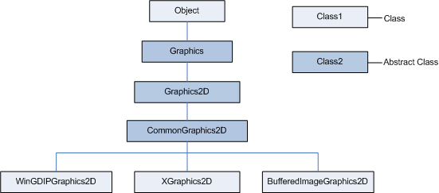

| Version | Version Information | Date |
|---|---|---|
| Initial version | Alexey Petrenko, Svetlana Konovalova: document created. | May 18, 2006 |
| Formatting update | Nadya Morozova | September 21, 2006 |
This document introduces the Java 2D* [1] implementation, supplied as part of the DRL (Dynamic Runtime Layer) initiative, and gives details on its design.
The target audience for the document includes a wide community of engineers interested in using Java 2D* and in further work with the product to contribute to its development. The document assumes that readers are familiar with the Java 2D* technology and the Java* programming language.
This document uses the unified conventions for the DRL documentation kit.
The Java 2D* implementation is the collection of classes for a high-performance two-dimensional (2D) graphics and image processing. The package includes line and shape drawing, text and image rendering.
DRL Java 2D* is a fast and easily portable implementation of the Java 2D* technology, consisting of a number of classes for advanced graphics and image processing.
DRL Java 2D* supports the Windows* and Linux* operating systems for the IA-32 architecture. The Windows* version mostly uses the GDI+ (Graphics Device Interface plus) library, but can also use the GDI library for better performance. For example, Java 2D* can use GDI instead of GDI+ to speed up image processing. The Linux* version uses Xlib and xft libraries.
DRL Java 2D* has portability in its design, so that you can easily port it to other operating systems and hardware architectures. For details and how to port Java 2D* on other platforms see Java 2D* Portability.
Figure 1 below shows the Java 2D* structure,
demonstrating the inheritance relationship of the
Graphics2D classes:

Figure 1: Inheritance Relationship of the Graphics2D
Classes
java.awt.Graphics and
java.awt.Graphics2D define the public interface for
all Graphics2D implementations.
org.apache.harmony.awt.gl.windows.WinGDIPGraphics2D
and org.apache.harmony.awt.gl.linux.XGraphics2D are
the Windows* and Linux* versions
respectively of the
org.apache.harmony.awt.gl.CommonGraphics2D class,
which implements the abstract methods of the
Graphics2D class.
org.apache.harmony.awt.gl.image.BufferedImageGraphics2D
class deals with drawing on buffered images.
For more information on the classes see Platform Specifics in DRL Java 2D* Graphics.
CommonGraphics2D
Class Internals
The section specifies the CommonGraphics2D class internal
areas and gives description on their tools.
The CommonGraphics2D class splits all shapes into a set
of rectangles to unify the drawing process for different operating
systems and architectures. For this purpose Java 2D*
uses the JavaShapeRasterizer and the
JavaLineRasterizer classes from the
org.apache.harmony.awt.gl.render package. The
JavaShapeRasterizer class splits an object implementing a
Shape interface into a set of rectangles and produces a MultiRectArea
object. The JavaLineRasterizer class makes line drawing
more accurate and processes lines with strokes, which are instances of
the BasicStroke class.
To port the shape drawing to another platform you just need to
override rectangle-drawing methods. However, if your operating system
has functions to draw particular shapes, you can optimize your
subclass of the CommonGraphics2D class by using this
functionality in overridden methods.
Blitter classes draw images on the display or buffered images. All
blitters inherit the
org.apache.harmony.awt.gl.render.Blitter interface.
Blitters are divided into:
DRL Java 2D* also uses blitters to fill the shapes
and the user-defined subclasses of the java.awt.Paint
class with paints, which the system does not support.
Text renderers draw strings and glyph vectors. All text renderers are
subclasses of the org.apache.harmony.awt.gl.TextRenderer
class.
Java 2D* does not have its own font rendering engine
and uses native libraries instead: the GDI library on the Windows* OS and the Xft, FontConfig and FreeType libraries on
the Linux* OS. The
java.awt.font.NumericShaper class uses data from the
Unicode Character Database [2] for retrieving character
properties.
The Windows* implementation - the
WinGDIPGraphics2D class - for the most part is based on
the GDI+ library, which has the routines for drawing all types of
shapes filling them with a solid color brush and a linear gradient
brush, but it does not support an acyclic gradient brush. The Java
2D* package doesn't use the native library texture
paint option, resorting to Blitters instead.
However, the major part of the shape drawing and filling routines is
native in this class.
As for the Linux* implementation - the
XGraphics2D class - the Xlib library has no methods to
draw and fill free-form shapes. So, the corresponding
XGraphics2D methods use Rasterizers, inherited from the
CommonGraphics2D class.
The actions to port the DRL Java 2D* package to another architecture or operating system, or to use it with another library depend on the particular platform. The main steps are the following:
org.apache.harmony.awt.gl.CommonGraphics2D.
Example
org.apache.harmony.awt.gl.windows.<SomeLib>Graphics2D
org.apache.harmony.awt.gl.<SomeOS>.<SomeLib>Graphics2D
[1] Java 2D* Technology http://java.sun.com/j2se/1.5.0/docs/guide/2d/index.html
[2] Unicode Character Database http://www.unicode.org/ucd/
* Other brands and names are the property of their respective owners.